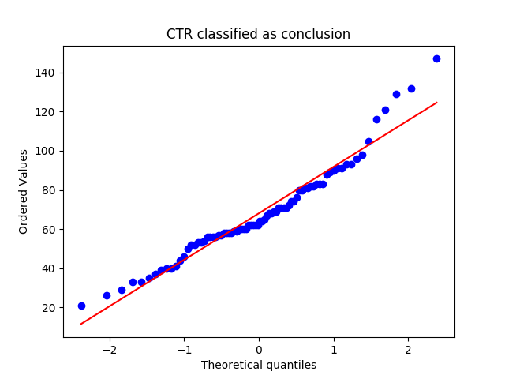
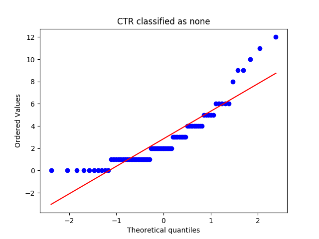
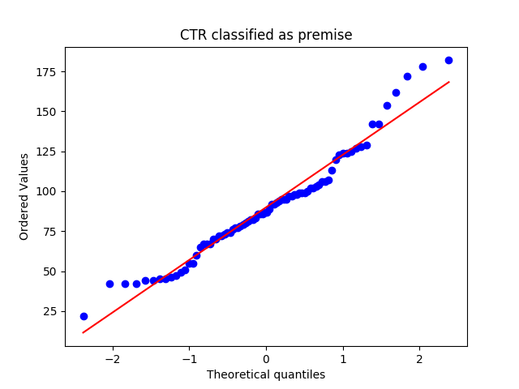
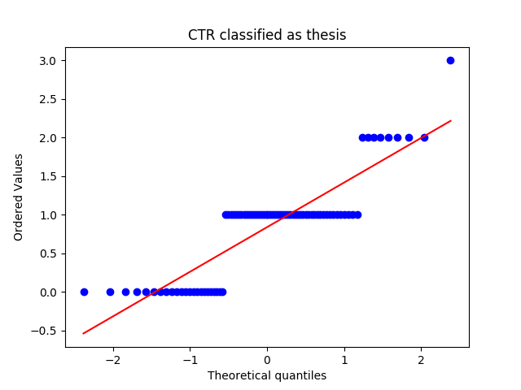
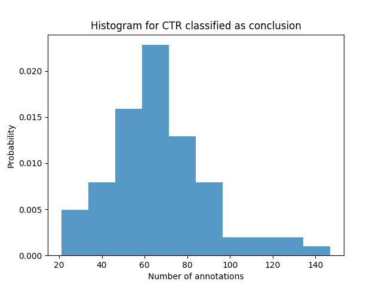
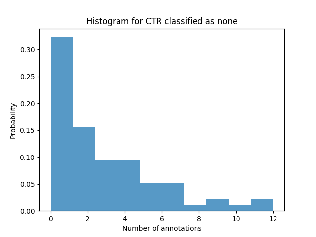
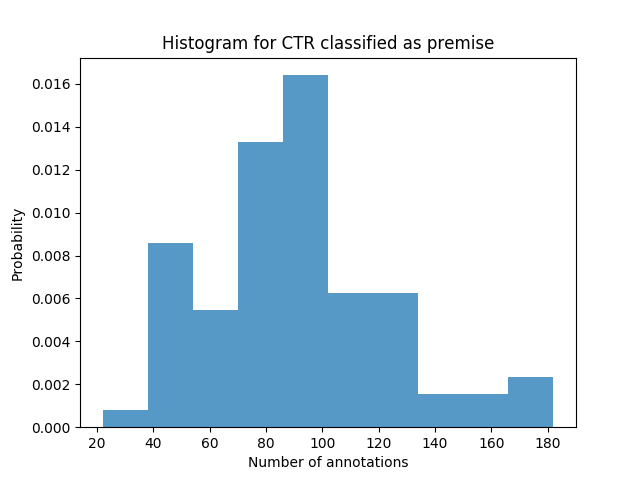
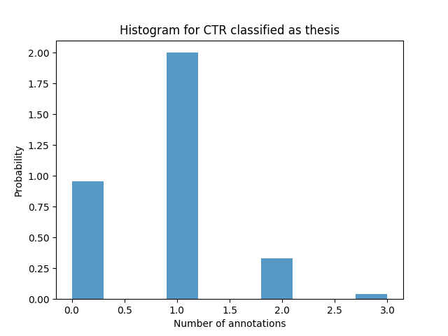
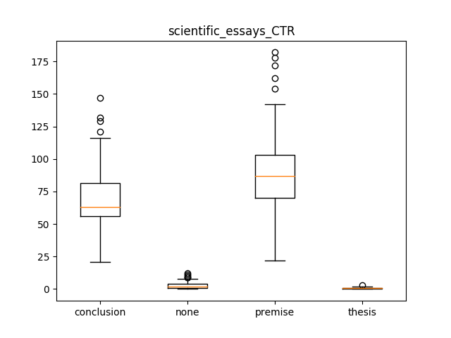

scientific_essays_CTR
Describing the Data-Set
Mean, Median and Standard Deviation
|
conclusion |
none |
premise |
thesis |
| median |
63.0000 |
2.000000 |
87.000000 |
1.000000 |
| mean |
68.0500 |
2.850000 |
89.925000 |
0.837500 |
| std |
23.7886 |
2.627261 |
32.783294 |
0.641166 |
QQ Plots




Histograms




Box Plot(s)

Normalization Test
stat: 0.951532065868, p-val:0.00422244798392
Not Normally distributed for CTR classified as conclusion
stat: 0.845555961132, p-val:1.15139371815e-07
Not Normally distributed for CTR classified as none
stat: 0.960609376431, p-val:0.0146522847936
Not Normally distributed for CTR classified as premise
stat: 0.776965022087, p-val:1.1274563505e-09
Not Normally distributed for CTR classified as thesis
Significancy Test
Using friedmann-test
Using friedmann-test
using stats.friedmanchisquare
chisq: 208.726342711
p-value: 5.48839295062e-45
statistic: 448.105921601
p-value: 1.11022302463e-16
chi2:204.03
ranking[1.7375, 1.2625, 3.7625000000000002, 3.2374999999999998]
Post Hoc Analysis (holm_multitest):
------------------------------------------------------
Comparing: none vs premise
z_value: 9.92043345827
p_value: 0.0
adj_p_value: 0.0
--------------------------------------------------------------------------
Comparing: premise vs thesis
z_value: 12.2474487139
p_value: 0.0
adj_p_value: 0.0
--------------------------------------------------------------------------
Comparing: thesis vs conclusion
z_value: 9.67548448399
p_value: 0.0
adj_p_value: 0.0
--------------------------------------------------------------------------
Comparing: none vs conclusion
z_value: 7.34846922835
p_value: 2.00506278247e-13
adj_p_value: 6.01518834742e-13
--------------------------------------------------------------------------
Comparing: premise vs conclusion
z_value: 2.57196422992
p_value: 0.0101123339213
adj_p_value: 0.0202246678427
--------------------------------------------------------------------------
Comparing: none vs thesis
z_value: 2.32701525564
p_value: 0.0199644533052
adj_p_value: 0.0202246678427
--------------------------------------------------------------------------